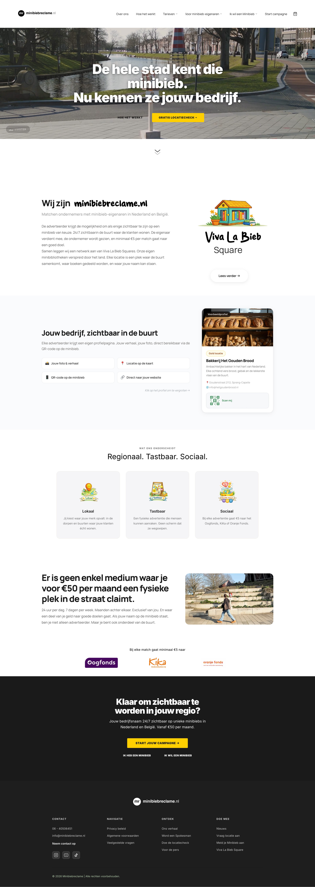
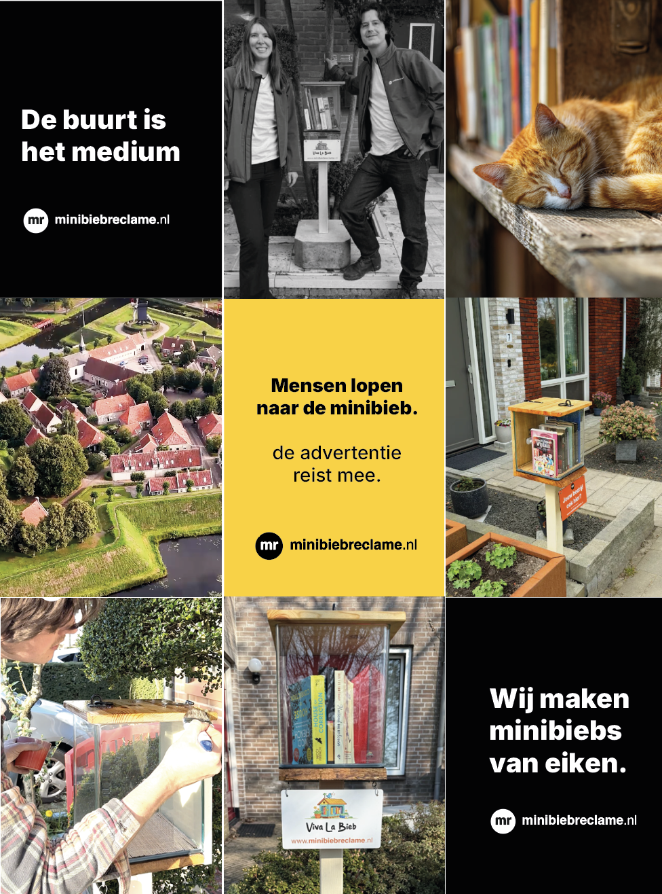

Een hyperlokaal advertentieplatform op mini-bibliotheken in de buurt. Het concept is van mijn partner Midas, die het van nul opbouwde. Mijn rol: het merk, de website, het digitale ecosysteem en alle visuele uitingen.
Vier stappen — van eerste beeld tot het ecosysteem zoals het nu draait.
Henk's Journey — hoe een buurtbewoner zijn eerste minibieb in de straat zet. Een korte film die toont waar het allemaal om draait: niet het advertentiepaneel, maar de mensen die hem ophangen.
Niet één logo. Een set beslissingen die samen het merk dragen. Logo, kleurpalet, typografie, stem. Elke post, elke poster, elke pagina begint hier.

Minibiebreclame.nl is geen one-pager. Het is een volledig platform met iDEAL-betaling, een locatie-checker met tier-systeem, profielpagina's voor ondernemers en aanmeldformulieren voor eigenaren én bedrijven. Ontworpen zodat bewoners, adverteerders en gemeentes allemaal op de juiste plek landen.

De content is nooit reclame-achtig. Eén beeld, één moment, geen slogans. Drie typografische tegels op een diagonaal — opener, hart, handtekening. Zes foto's die samen het verhaal van maker, buurt en gebruiker vertellen. Het merk spreekt als een buurtbewoner, niet als een agency.

Dit is het werk dat ik doe als er geen opdrachtgever is. Als bewijs dat ik niet alleen uitvoer wat anderen bedenken, maar ook zelfstandig een merk en ecosysteem kan opbouwen rondom iemand anders' idee. Dat maakt me geen "betere designer". Maar het maakt wel dat ik weet hoe het hele plaatje werkt.